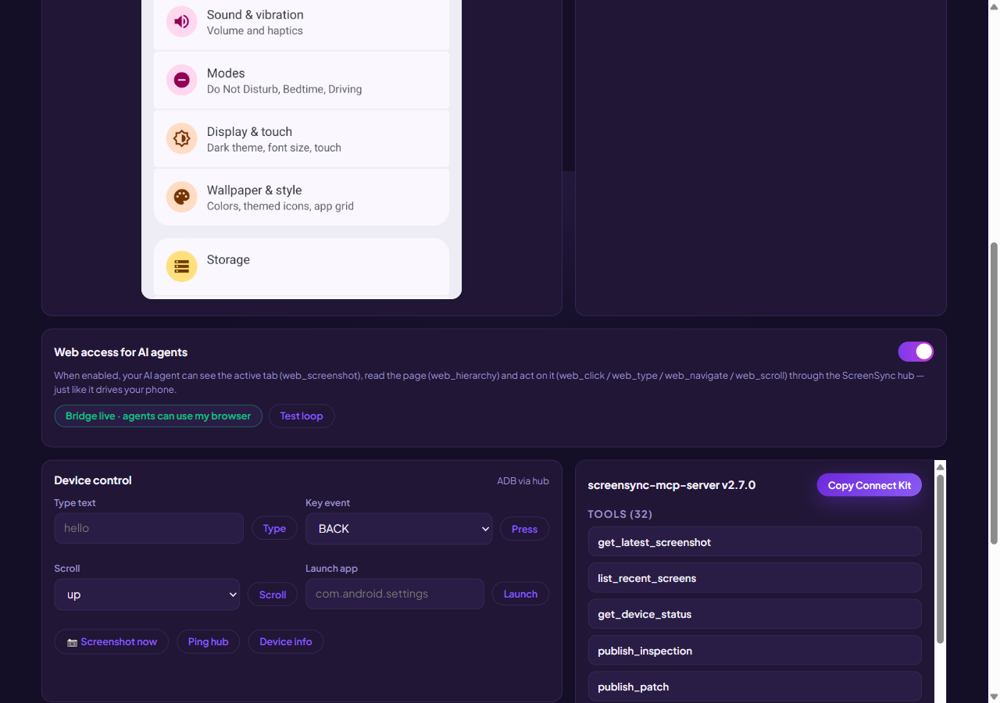
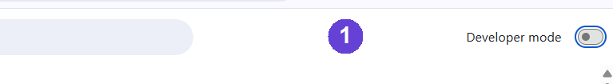
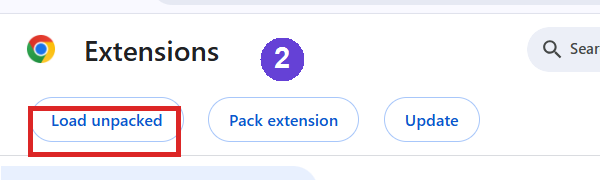
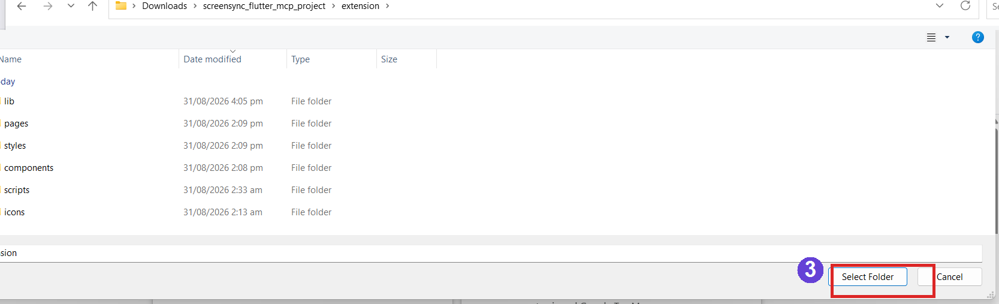
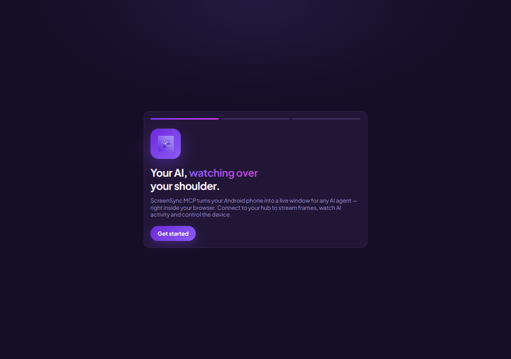
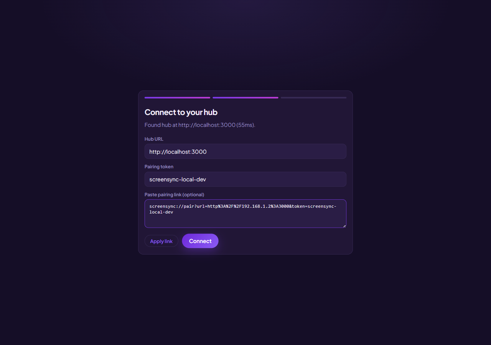
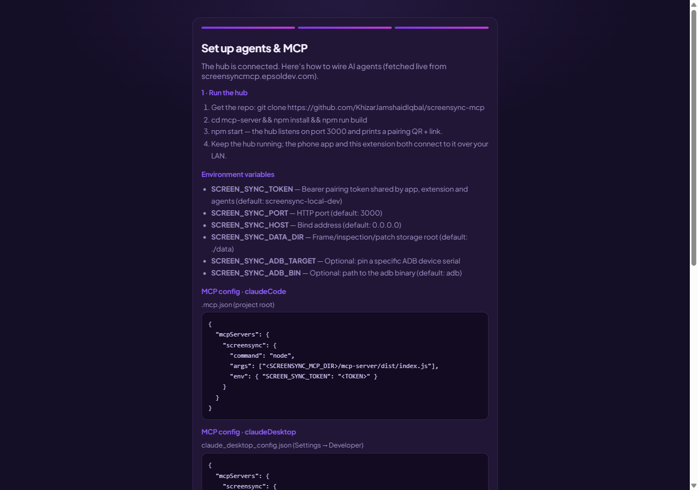
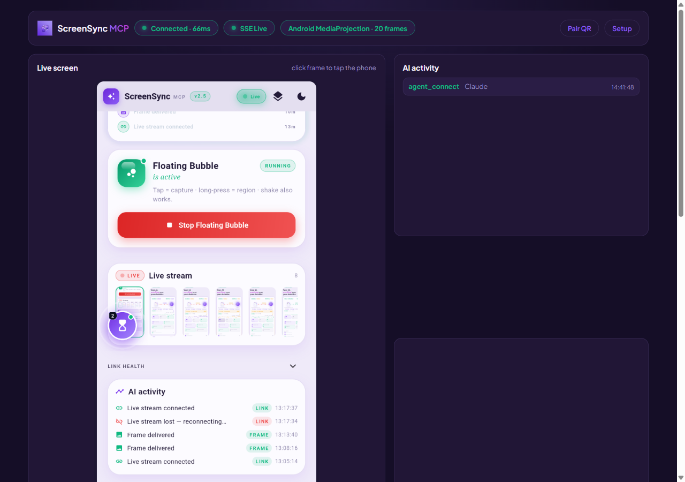
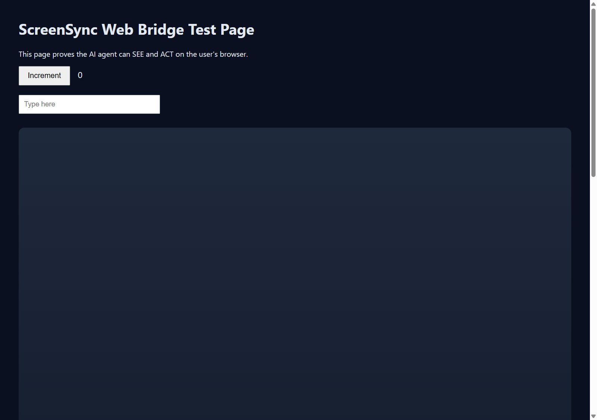

ScreenSync MCP browser extension: your Chrome tab in your AI's hands
One extension gives AI agents safe, live access to your web — see your active tab, read any page, click & type for you — plus the full phone dashboard: live Android screen, latency telemetry and a one-click Connect Kit.

226 MCP tools: 29 for your phone and desktop, 197 for your browser.
One extension. Two superpowers.
Just like the mobile app hands agents your phone, the extension hands them your browser — through the same token-secured hub on your LAN.
SEE — your live tab
web_screenshot shows the agent exactly what you see in your active tab, as a real image.
READ — any page
web_hierarchy returns the page text plus a map of every clickable element, with indexes.
ACT — like you would
web_click, web_type, web_scroll and web_navigate operate your real tab — no headless fake.
You stay in control
Risky actions on sites you have not trusted wait for your approval. Browser-internal pages are refused. One toggle (or Alt+Shift+S) cuts the agent off instantly.
Phone, live too
The same dashboard streams the live screen from our Android screen MCP server, with latency telemetry and AI activity. Click the frame to tap the phone.
One-click Connect Kit
Copy the exact MCP config for Claude Code / Desktop with your hub URL + token baked in, ready to paste.
Advanced automation toolkit: Playwright-style control of your real tab
197 browser tools (226 MCP tools in all) take the agent from simple clicking to full browser engineering: auto-waiting actionability (web_actionable), parent-scoped locators, token-bounded digests (web_page_digest), JavaScript eval, CDP network mocking, dialog interception, storage inspection, Core Web Vitals, tab groups, multi-browser data sync, and visual diff baselines.
And the headline: web_watch streams changed frames with pixel-level change detection — the agent literally watches your screen like a live video and never misses a visual change.
Set up in five easy steps.
Every step below is shown with the real extension, exactly as you will see it.
Run the hub on your computer
The hub is the small local server daemon that coordinates your AI agents, phone, and browser. Download it below, unzip, and double-click start-hub.bat (macOS/Linux: sh start-hub.sh) — needs free Node 18+. First time? Follow the guide to install the ScreenSync hub and connect Claude.
Always the latest build — rebuilt from our GitHub on every release.
Load the extension in Chrome
Grab the extension zip below. Unzip it, open chrome://extensions (or edge://extensions), switch on Developer mode, click Load unpacked and pick the unzipped screensync-extension folder.
screensync-extension.zip), NOT the hub zip.
Always the latest build — the zip is rebuilt straight from our GitHub on every release. Read the extension source on GitHub.
A Chrome Web Store listing is in review — the sideload build is the identical code.


screensync-extension folder → Select Folder
Open the wizard
Click the ScreenSync icon in your toolbar. A three-step welcome wizard opens — press Get started and it walks you to the connect form.

Connect to your hub
On the same computer the wizard finds localhost:3000 by itself. From another machine, paste the pairing link the hub printed (or scan its QR with the phone app). If the browser asks, allow the one-time LAN permission. The last wizard step then shows how to wire up your AI agents.


You're live — check Web access
The dashboard opens: phone screen streaming, latency pills, AI activity. Check the Web access for AI agents card: when its pill is green, your agent can see, read and act on your active tab, and risky actions still wait for your approval. Flip the toggle off (or press Alt+Shift+S) any time to cut access instantly.

What your agent sees
The moment Web access is on, web_screenshot returns your active tab exactly as it is — this capture was taken by the agent itself during testing, not staged.
Restricted pages (chrome://, edge://, about:, devtools) are always refused.

Built-in agent skills.
The extension ships eight ready-made MCP skills. Any connected agent discovers them automatically via get_skills — no prompting gymnastics.
"What am I looking at?"
The agent checks the bridge, screenshots your live tab, reads the page, and explains it in plain words — with the image in its reply.
Forms, filled safely
Maps every field from the hierarchy (no selector guessing), types your values, submits, and verifies the result with a screenshot.
Audit a page in your real browser
Navigates to a URL, scrolls the whole page viewport by viewport, and reports layout / broken-UI / accessibility defects with evidence.
Repro with evidence
Follows your repro steps on the actual tab, screenshots before/after each step, and names the exact step where reality diverged.
Debug with the full evidence trail
Reproduces the problem while capturing console errors, failed network requests and dialogs live, then reports the likely cause with a final screenshot attached.
Watch it happen, frame by frame
Records your live screen with web_watch, acts during the recording, then narrates every captured frame like a video — sub-second cadence, no visual change missed.
Core Web Vitals checkup
Loads the page, runs web_perf for FCP / LCP / CLS and resource stats, screenshots the result, and gives prioritized, plain-words speed recommendations.
Many tabs, one workflow
Opens and switches between tabs, does its job on each one, and checkpoints progress with screenshots so you see exactly what happened where.
One extension.
Your phone + your web.
Hand your AI the whole picture — live Android screen and live browser — with safety switches you control.
Every release is written down — read the changelog for what changed in the Android app and the browser extension, build by build.